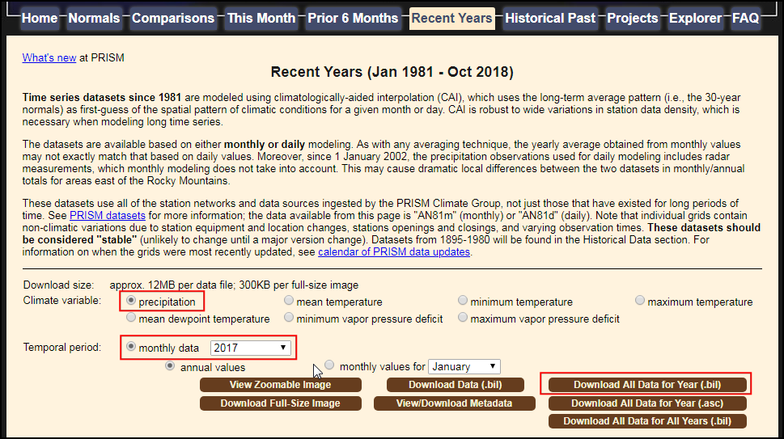
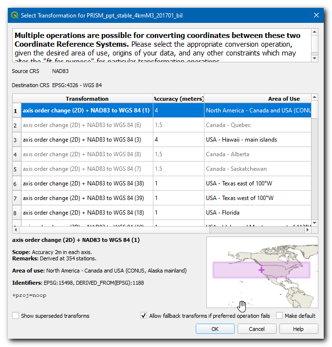
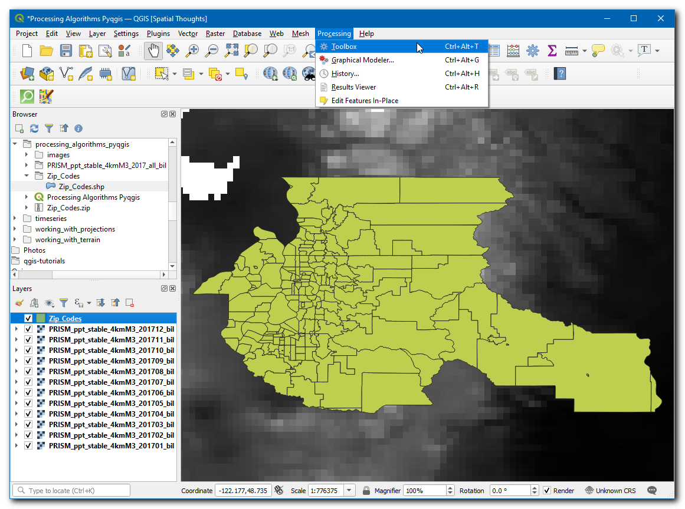
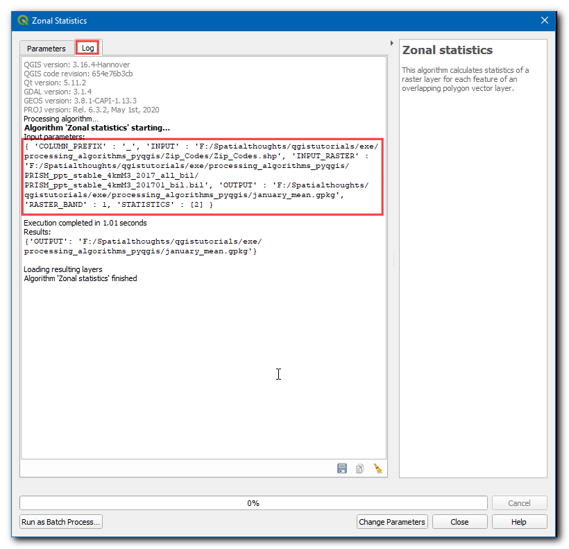
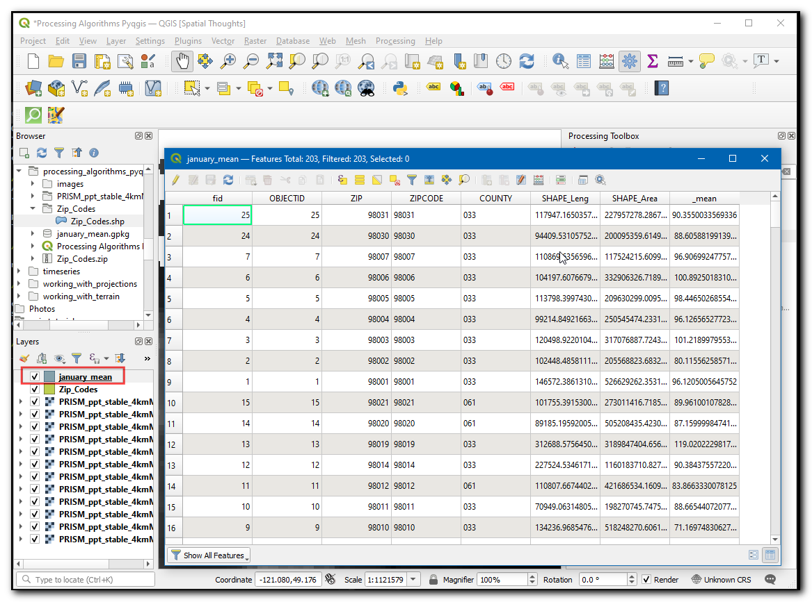
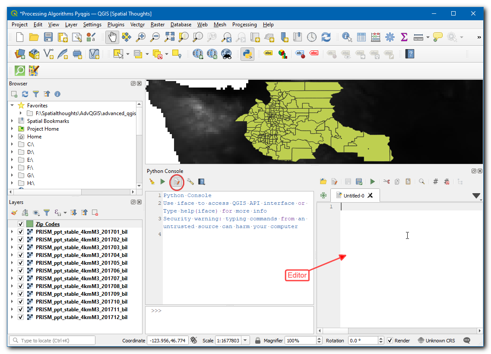
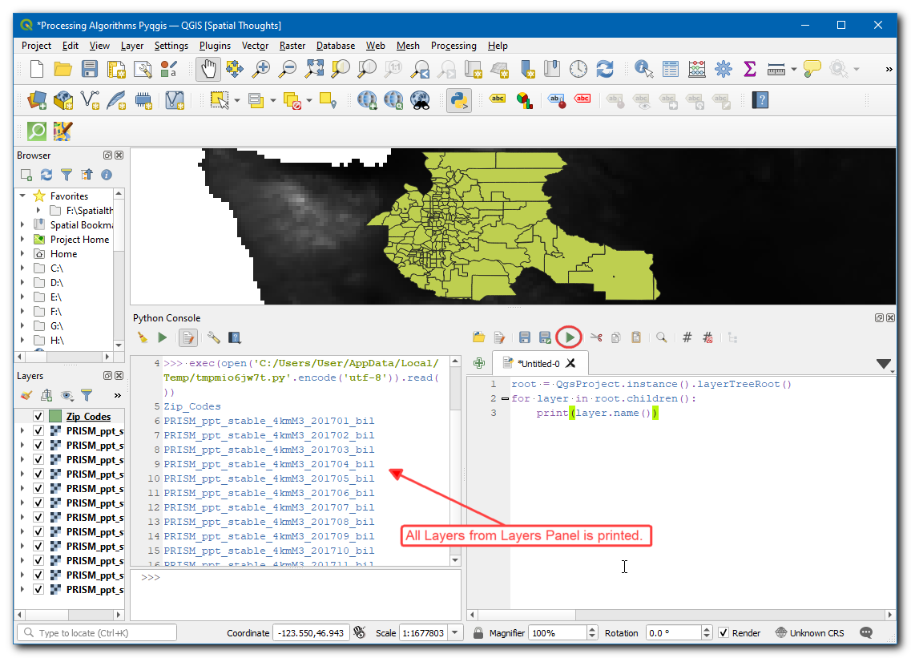
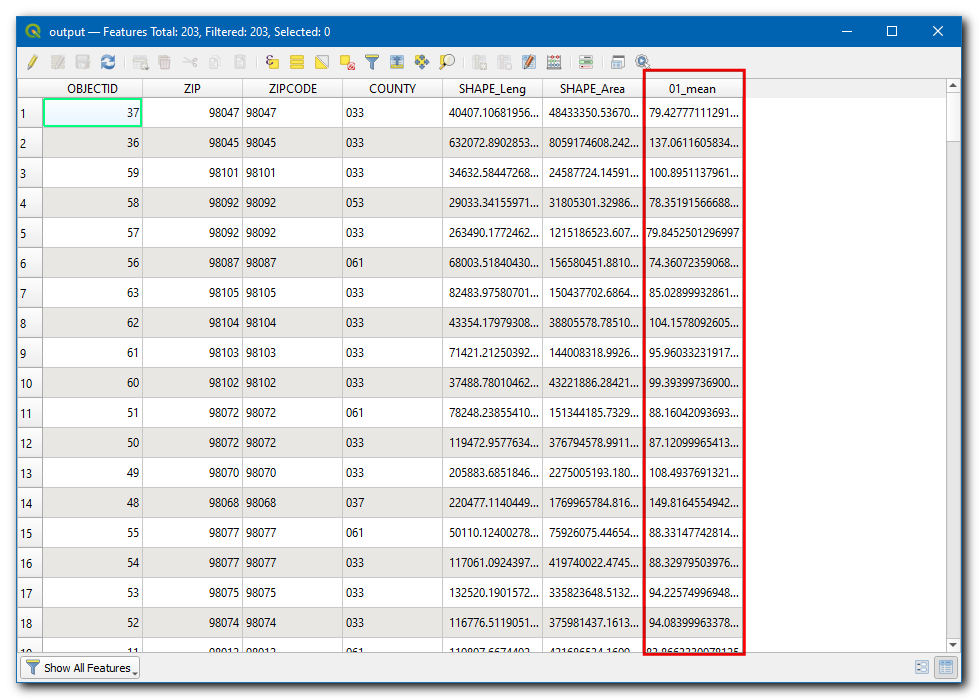
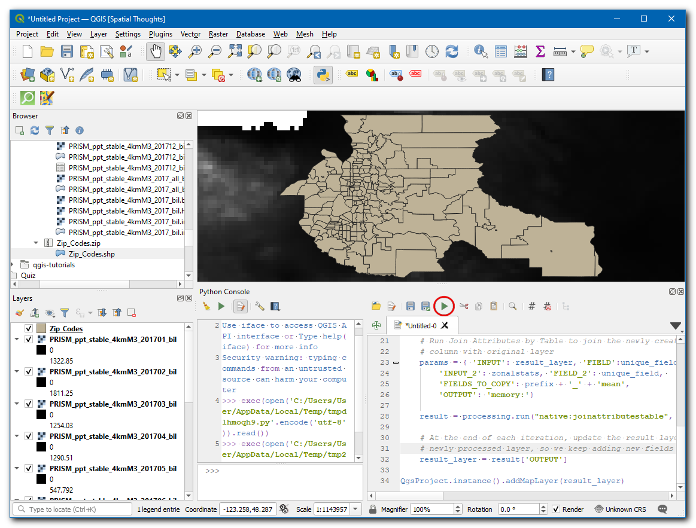

Ujaval Gandhi
Ujaval GandhiPokretanje algoritama za obradu putem Pajtona (QGIS3)¶
Kutija sa alatima za obradu u QGIS-u sadrži stalno rastuću kolekciju alata za geoobradu. Kutija sa alatima pruža jednostavan interfejs za grupnu obradu za pokretanje bilo kog algoritma na velikom broju ulaza. Vidite Paketna obrada pomoću okvira za obradu (QGIS3). Ali postoje slučajevi kada je potrebno da uključite malo prilagođene logike u svoju grupnu obradu. Pošto se svi algoritmi za obradu mogu programski pokrenuti putem Python API-ja, možete ih pokrenuti putem Python konzole. Ovaj tutorijal pokazuje kako pokrenuti algoritam za obradu putem Python konzole da biste izvršili prilagođeni zadatak geoobrade u samo nekoliko redova koda. Molimo vas da pregledate tutorijal Početak programiranja u Pajtonu (QGIS3) da biste se upoznali sa osnovama Python skriptnog okruženja u QGIS-u.
Pregled zadatka¶
Koristićemo 12 mrežnih rasterskih slojeva koji predstavljaju padavine za svaki mesec u godini i izračunaćemo prosečnu mesečnu količinu padavina za sve poštanske brojeve u oblasti Sijetla.
Druge veštine koje ćete naučiti¶
Pristupite svim slojevima (rasterskim i vektorskim) iz Pajton konzole i ispišite njihova imena.
Spojite različite slojeve u jedan sloj koristeći Pajton skriptu.
Dobijte podatke¶
PRISM Climate Group prikuplja klimatska posmatranja i pruža istorijske i aktuelne klimatske podatke za kontinentalni deo SAD. Idite na stranicu sa podacima Recent Years i preuzmite mesečne podatke o padavinama za 2017. godinu u BIL formatu.
Portal otvorenih podataka grada Sijetla pruža besplatne i otvorene podatke za grad. Pretražite i preuzmite Poštanski brojevi podatke u shapefile formatu.
Radi lakšeg snalaženja, možete direktno preuzeti kopiju oba skupa podataka sa donjih linkova:
PRISM_ppt_stable_4kmM3_2017_all_bil.zip
Izvor podataka [PRISM] [CITYOFSEATTLE]
Procedura¶
Pronađite fasciklu
PRISM_ppt_stable_4kmM3_2017_all_bil.zipu QGIS pregledaču i proširite je. Fascikla sadrži 12 pojedinačnih slojeva za svaki mesec. Držite pritisnut taster Ctrl i izaberite.bildatoteke za svih 12 meseci. Kada ih izaberete, prevucite ih na platno.

Белешка
Podaci su dati u BIL formatu. Svaki sloj je predstavljen skupom datoteka .bil koja sadrži stvarne podatke, .hdr datotekom koja opisuje strukturu podataka i .prj datotekom koja sadrži informacije o projekciji. QGIS može da učita .bil datoteku pod uslovom da ostale datoteke postoje u istom direktorijumu.
Pojaviće se dijalog prozor Izaberite transformaciju PRISM_ppt_stable_4kmM3_2017_all_bil, ostavite izbor na podrazumevanoj vrednosti i kliknite U redu.

Zatim pronađite fasciklu
Zip_Codes.zipi proširite je. Prevucite datotekuZip_Codes.shpna platno.

Kliknite desnim tasterom miša na sloj „Zip_Codes“ i izaberite :guilabel:„Zumiraj na sloj“. Videćete poligone poštanskih brojeva za grad Sijetl i susedna područja.

Idite na .

Algoritam za uzorkovanje rasterskog sloja korišćenjem vektorskih poligona poznat je kao „zonalna statistika“. Potražite algoritam u Alatke za obradu. Izaberite algoritam i zadržite pokazivač miša iznad njega. Videćete objašnjenje sa tekstom ID algoritma: ’native:zonalstatisticsfb’. Zabeležite ovaj ID koji će biti potreban za pozivanje ovog algoritma putem Pajton API-ja. Dvaput kliknite na algoritam „zonalna statistika“ da biste ga pokrenuli.

Uradićemo ručno probno pokretanje algoritma za jedan sloj. Ovo je koristan način da proverimo da li se algoritam ponaša kako se očekuje, a takođe je i jednostavan način da saznamo kako da prosledimo relevantne parametre algoritmu kada ga koristimo preko Pajtona. U dijalogu Zonalna statistika, izaberite
Zip_Codeskao Ulazni slojPRISM_ppt_stable_4kmM3_201701_bilkao Rasterski sloj i ostavite ostale parametre na podrazumevane vrednosti. Kliknite na dugme … pored Statistika za izračunavanje i izaberite samoProsečna vrednost, zatim kliknite na dugme … pored Zonalna statistika i sačuvajte sloj kaojanuary_mean.gpkgKliknite na Pokreni.

Kada se algoritam završi, pređite na karticu Log. Zabeležite Ulazne parametre koji su prosleđeni algoritmu. Kliknite na Zatvori.

Sada će novi sloj „januar_srednja vrednost“ biti dodat na platno. Hajde da proverimo rezultate, kliknite desnim tasterom miša na sloj i izaberite Otvori tabelu atributa. Ovaj poseban algoritam menja sloj ulazne zone na mestu i dodaje novu kolonu za svaku izabranu statistiku. Pošto smo izabrali samo vrednost „srednja vrednost“, nova kolona pod nazivom „_srednja vrednost“ se dodaje u tabelu. „_“ je bio podrazumevani prefiks. Kada pokrenemo algoritam za slojeve svakog meseca, biće korisno da navedemo prilagođeni prefiks sa brojem meseca kako bismo mogli lako da identifikujemo srednje vrednosti za svaki mesec (npr. 01_srednja vrednost, 02_srednja vrednost itd.). Navođenje ovog prilagođenog prefiksa nije moguće u interfejsu za grupnu obradu QGIS-a i ako bismo pokrenuli ovu komandu koristeći taj interfejs, morali bismo ručno da unesemo prilagođeni prefiks za svaki sloj. Ako radite sa velikim brojem slojeva, ovo može biti veoma komplikovano. Stoga, možemo dodati ovu prilagođenu logiku koristeći Pajton API i pokrenuti algoritam u for-petlji za svaki sloj.

Nazad u glavnom prozoru QGIS-a, idite na .

Kliknite na dugme show editor. Ovo će otvoriti Python editor gde se može napisati i izvršiti gomila Python koda jednim klikom.

Da bismo pokrenuli algoritam za obradu putem Pajtona, potrebno je da pristupimo imenima svih slojeva. Unesite sledeći kod u editor i kliknite na dugme Play. Videćete imena svih slojeva ispisana u konzoli.
root = QgsProject.instance().layerTreeRoot() for layer in root.children(): print(layer.name())
Sada, izračunajmo „prosek“ za jedan mesec i kreirajmo izlazni sloj. U donjem kodu break se koristi za izlazak iz petlje nakon prvog izvršavanja, pomoću čega možemo izračunati prosek za januar mesec.
import re root = QgsProject.instance().layerTreeRoot() input_layer = 'Zip_Codes' unique_field = 'OBJECTID' # Iterate through all raster layers for layer in root.children(): if layer.name().startswith('PRISM'): # Run Zonal Stats algorithm # Extract the YYYYMM part of the layer name pattern = r'_(\d+)_' matches = re.findall(pattern, layer.name()) # Use the month as the prefix prefix = matches[0][-2:] params = {'INPUT_RASTER': layer.name(), 'RASTER_BAND': 1, 'INPUT': input_layer, 'COLUMN_PREFIX': prefix+'_', 'STATISTICS': [2], 'OUTPUT': 'memory:' } result = processing.run("native:zonalstatisticsfb", params) result_layer = result['OUTPUT'] QgsProject.instance().addMapLayer(result_layer) # Breaking out of loop to demonstrate the # zonalstatistics algorithm. break
Белешка
Takođe možete pokrenuti QGIS algoritam za obradu putem Pajtona koristeći funkciju processing.runAndLoadResults() umesto processing.run() kao što je prikazano gore - što će rezultat direktno učitati na QGIS platno.
Novi sloj
outputće biti dodat na platno, kliknite desnim tasterom miša na sloj i izaberite Otvori tabelu atributa. 01_mean predstavlja prosek za jedan mesec, slično tome, gornji algoritam će proizvesti 12 novih slojeva ako se izvrši bez prekida.

Sada dodajmo kod za spajanje svih srednjih vrednosti meseci i kreiranje jednog izlaznog sloja od njega. Ažuriramo prethodni kod kako bismo iterativno pokrenuli algoritam zonalne statistike. Definišemo novu promenljivu „result_layer“ koja je na početku podešena na „Zip_Codes“, ali se ažurira sa izlaznim slojem iz svake iteracije. Ovo će nam omogućiti da koristimo rezultat svake iteracije i dodamo mu nove kolone. Unesite sledeći kod da biste iterativno prešli sve rasterske slojeve i kreirali jedan sloj koji sadrži sve srednje vrednosti meseci.
import re root = QgsProject.instance().layerTreeRoot() input_layer = 'Zip_Codes' result_layer = input_layer unique_field = 'OBJECTID' # Iterate through all raster layers for layer in root.children(): if layer.name().startswith('PRISM'): # Run Zonal Stats algorithm # Extract the YYYYMM part of the layer name pattern = r'_(\d+)_' matches = re.findall(pattern, layer.name()) # Use the month as the prefix prefix = matches[0][-2:] params = {'INPUT_RASTER': layer.name(), 'RASTER_BAND': 1, 'INPUT': result_layer, 'COLUMN_PREFIX': prefix+'_', 'STATISTICS': [2], 'OUTPUT': 'memory:' } result = processing.run("native:zonalstatisticsfb", params) # Update the result_layer variable # The result will be used as input for the next iteration result_layer = result['OUTPUT'] QgsProject.instance().addMapLayer(result_layer)
Kada se obrada završi, novi sloj „output“ će biti dodat na platno, kliknite desnim tasterom miša na sloj i izaberite Otvori tabelu atributa.

Videćete 12 novih kolona dodatih u tabelu sa prilagođenim prefiksima i srednjim vrednostima padavina izvučenim iz rasterskih slojeva.

If you want to give feedback or share your experience with this tutorial, please comment below. (requires GitHub account)